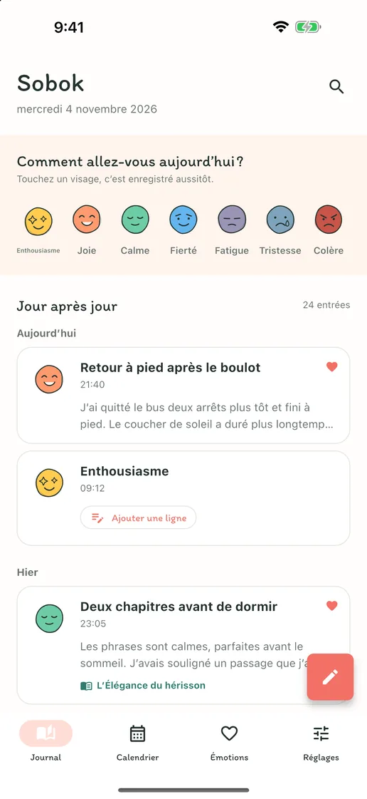
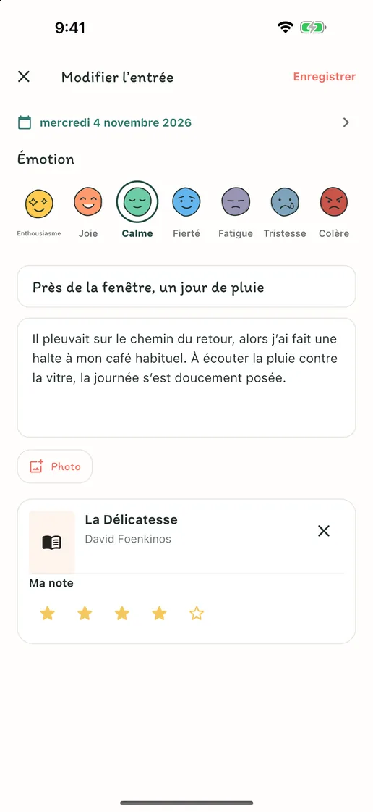
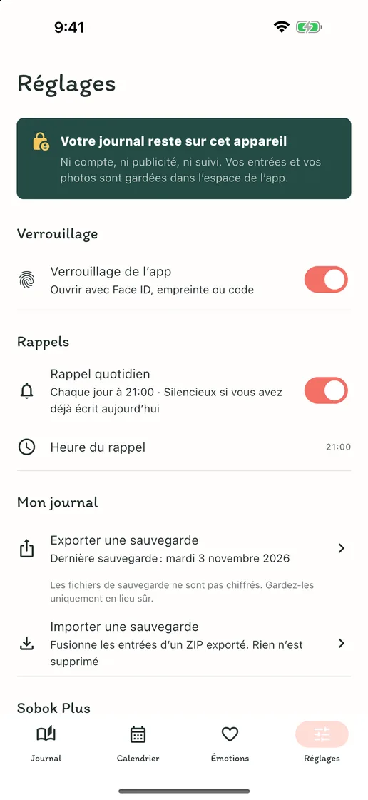
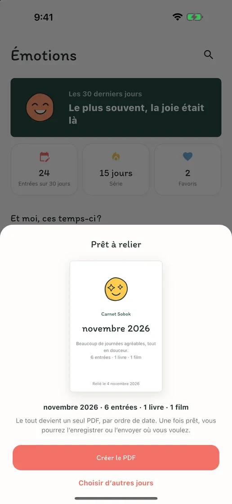
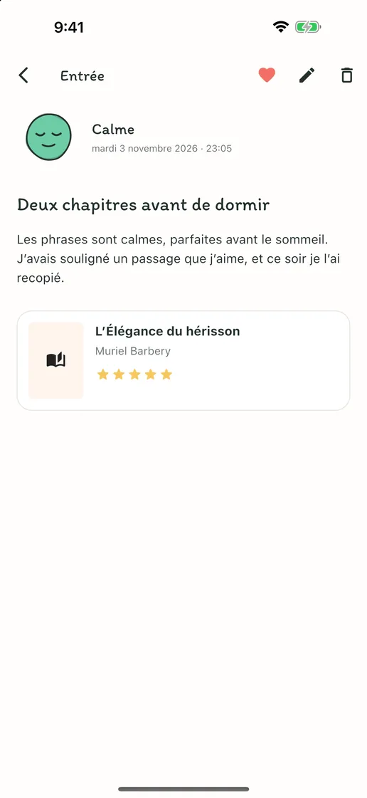
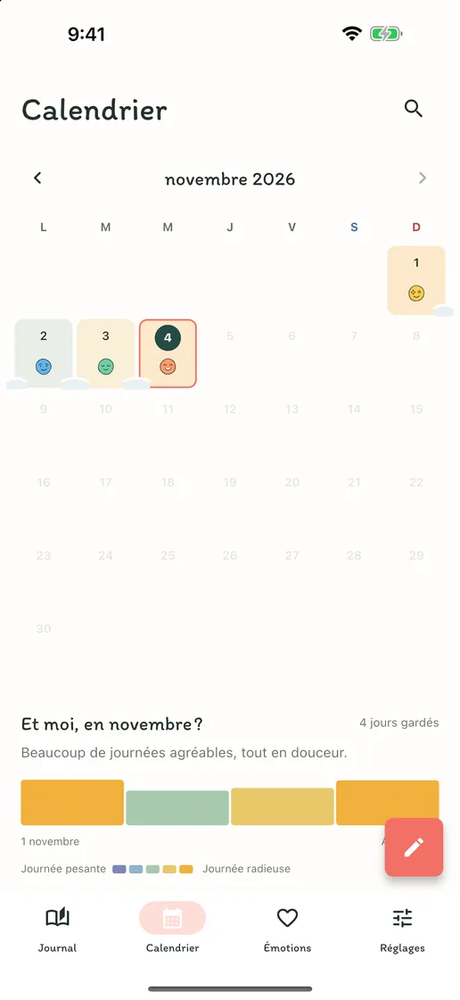
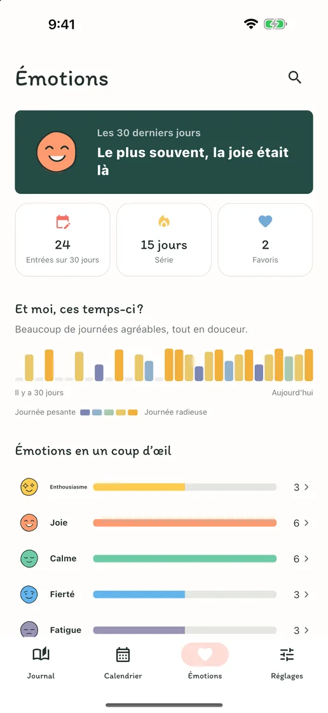

L’émotion du jour, en un geste
Touchez l’un des sept visages d’émotion : il devient l’entrée du jour. Quand vous avez quelque chose à dire, ajoutez une ligne à cette même entrée.
Humeur, mots, livres et films
Ni compte, ni pub, ni abonnement. Une émotion suffit à garder la journée ; textes, photos, livres et films tiennent dans la même entrée. Tout reste sur votre téléphone.
Bientôt sur l’App Store et Google PlayGratuit · Achats intégrés · iPhone et Android · English · Deutsch · Tiếng Việt · Español · Bahasa Indonesia · 日本語 · 简体中文 · 繁體中文 · ไทย · Português · Français · 한국어


Écrivez autant que vous voulez
Les jours où vous n’avez rien à dire, toucher une émotion suffit à garder la journée. Les jours où vous avez envie d’écrire, un titre, un long texte, des photos et vos impressions sur le livre que vous venez de lire ou le film que vous venez de voir tiennent dans une seule entrée.
Touchez l’un des sept visages d’émotion : il devient l’entrée du jour. Quand vous avez quelque chose à dire, ajoutez une ligne à cette même entrée.
Un titre, un long texte, des photos et une note : ajoutez seulement ce dont vous avez envie ce jour-là. Cherchez le livre que vous venez de lire ou le film que vous venez de voir, ou saisissez-le vous-même.
Chaque jour où vous écrivez, son émotion se pose sur le calendrier, et les jours qui se suivent s’amoncellent comme la neige. Voyez d’un coup d’œil les bonnes semaines et les plus difficiles.
Dans l’app
En coréen, « sobok-sobok » est le bruit de la neige qui s’amoncelle en silence — comme vos jours, qui se rassemblent ici un à un.





Ni inscription, ni publicité, ni suivi. Votre journal est stocké uniquement sur votre appareil, et vous pouvez exporter toutes vos entrées et photos en fichier ZIP pour les retrouver sur un nouvel appareil. Écriture, recherche, calendrier, verrouillage et sauvegarde sont gratuits ; seul Sobok Plus, qui relie vos entrées en un carnet PDF, est un achat unique.